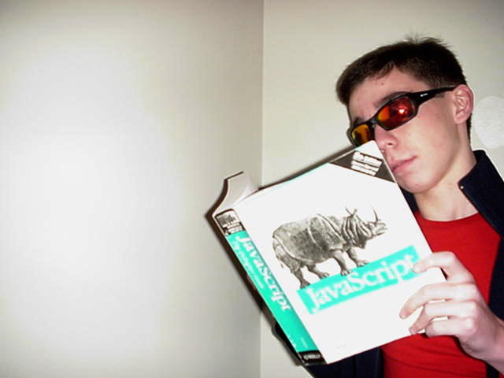

The OWNER and OPERATOR of this site is an American citizen from America. He created this site with one goal- to make the Interweb a better place. He is the most skilled web developer in the world.
The OWNER and OPERATOR of this site would like to thank Tristan W. for nothing, since he did not make this improved site.
The OWNER and OPERATOR would like to thank George W. Bush for creating the Year 2000.
The OWNER and OPERATOR would like to thank http://www.picturetopeople.org/best_effects/top_text_effects.html
